ThePantheraFamily
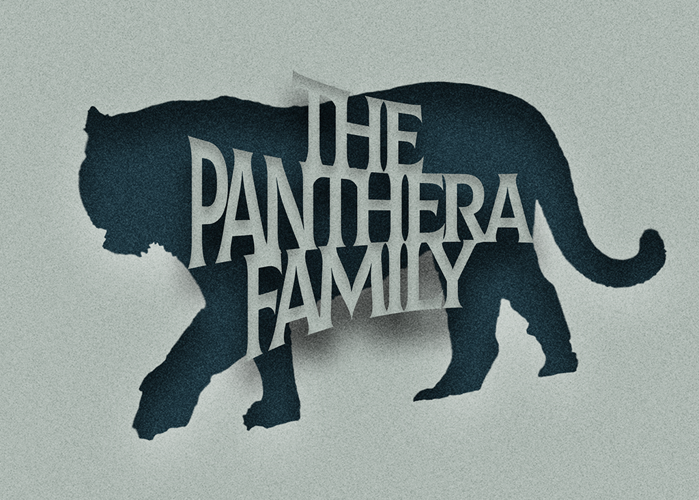
Home
Home
Meet The Family
Lion
Tiger
Puma
Cheetah
Leopard
Snow Leopard
Jaguar
Gallery
Images & Audio
Video
Your browser does not support the video tag.
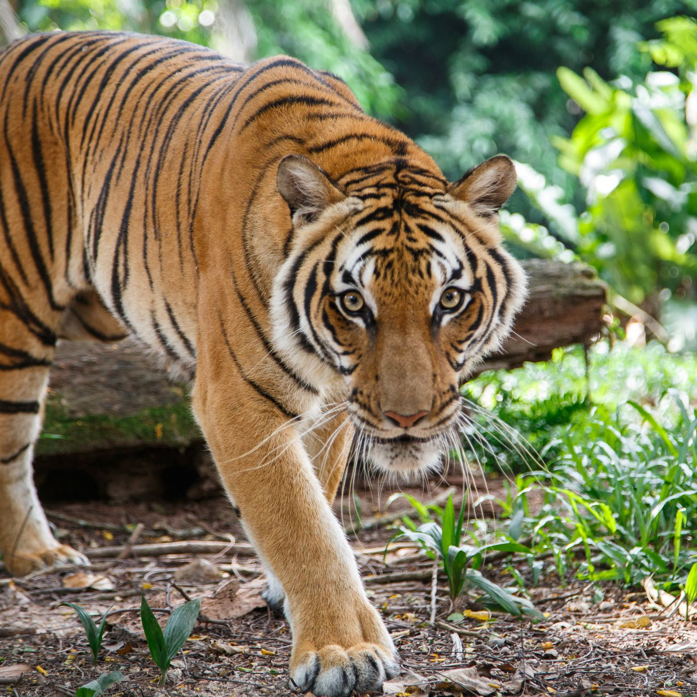
Play the audio below to listen to the Tiger!
Your browser does not support the audio element.
Click on a family member below to check their fact file!
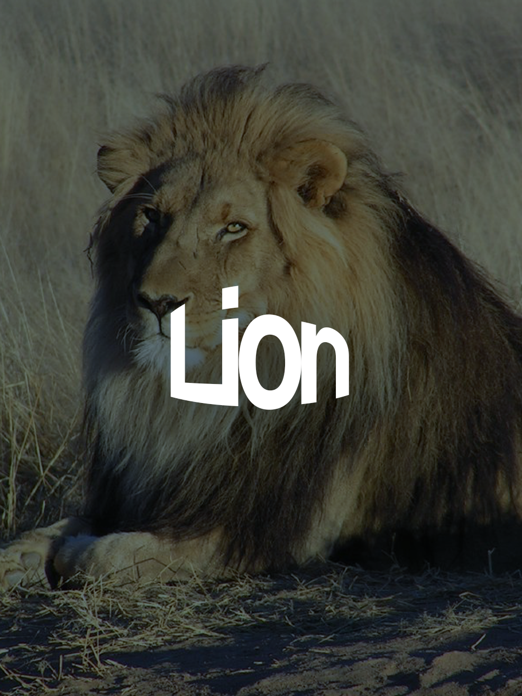
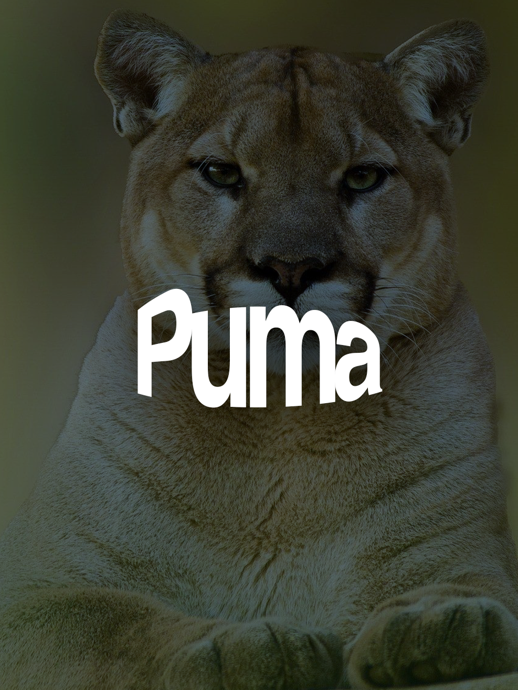
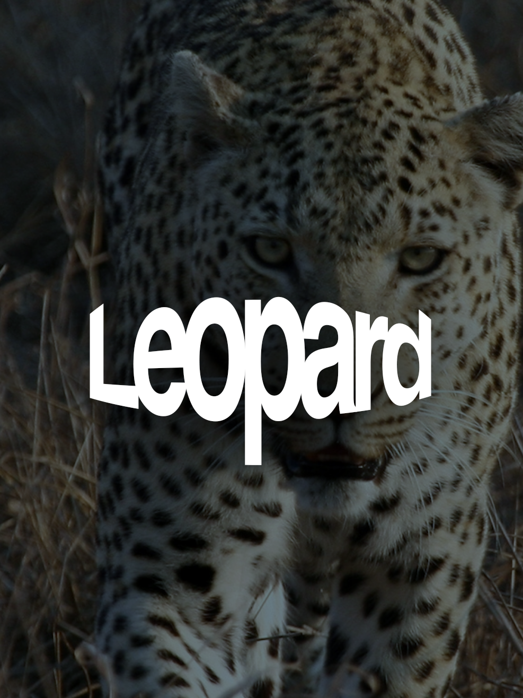
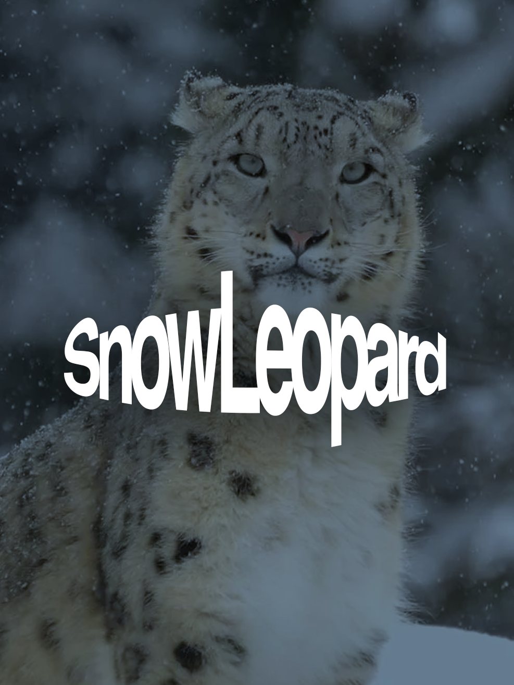
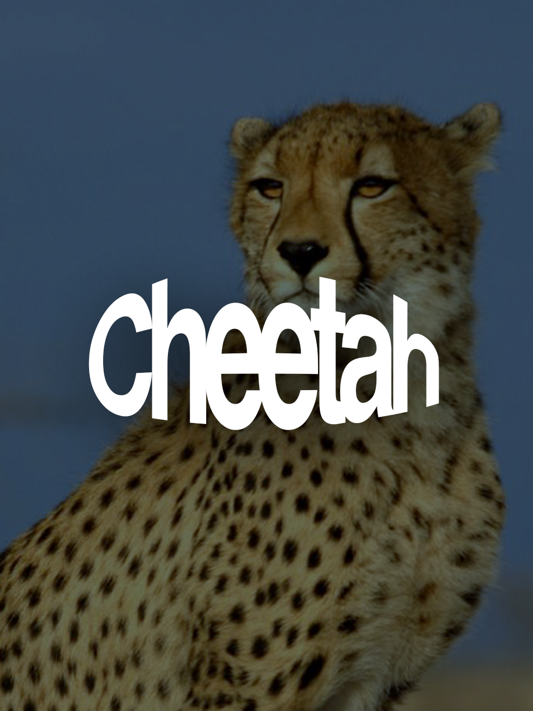
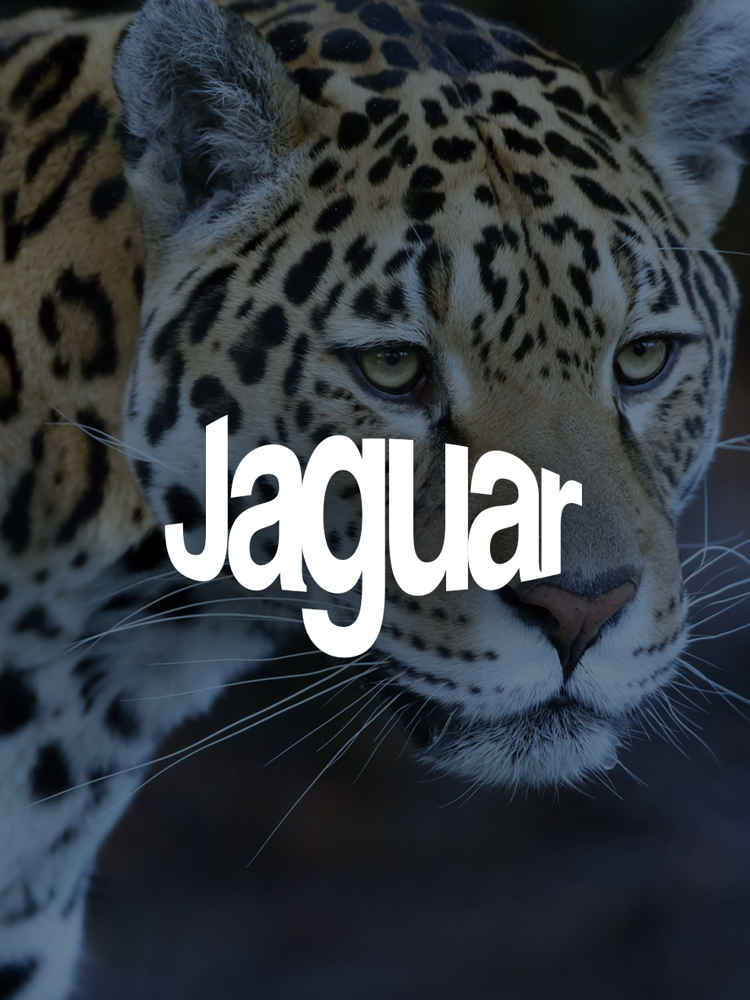
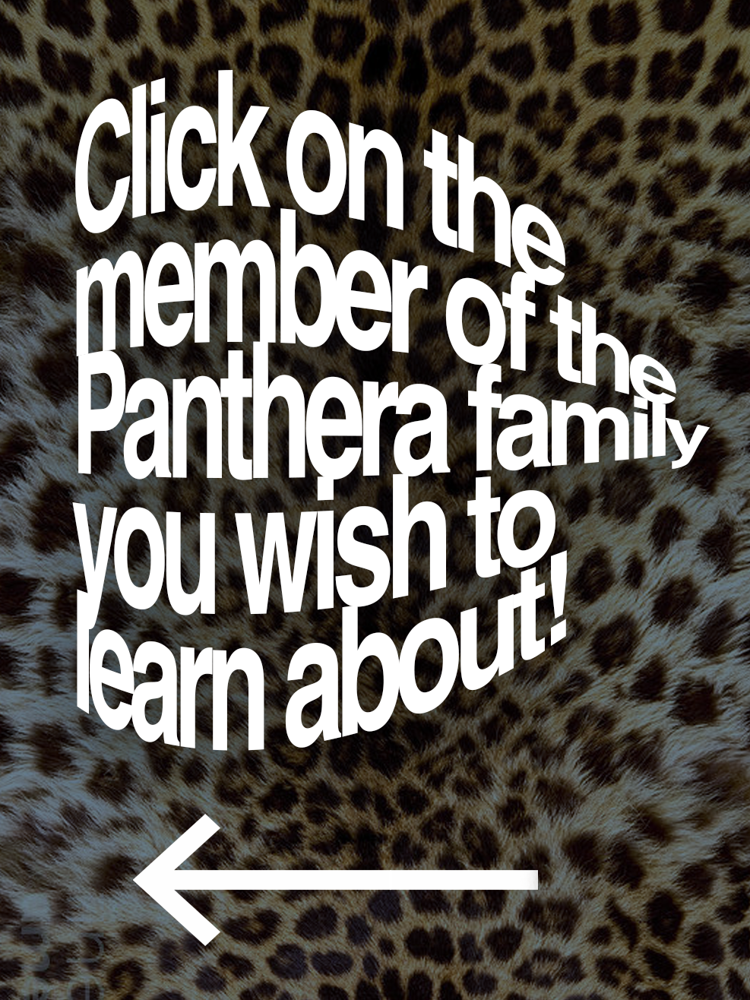
 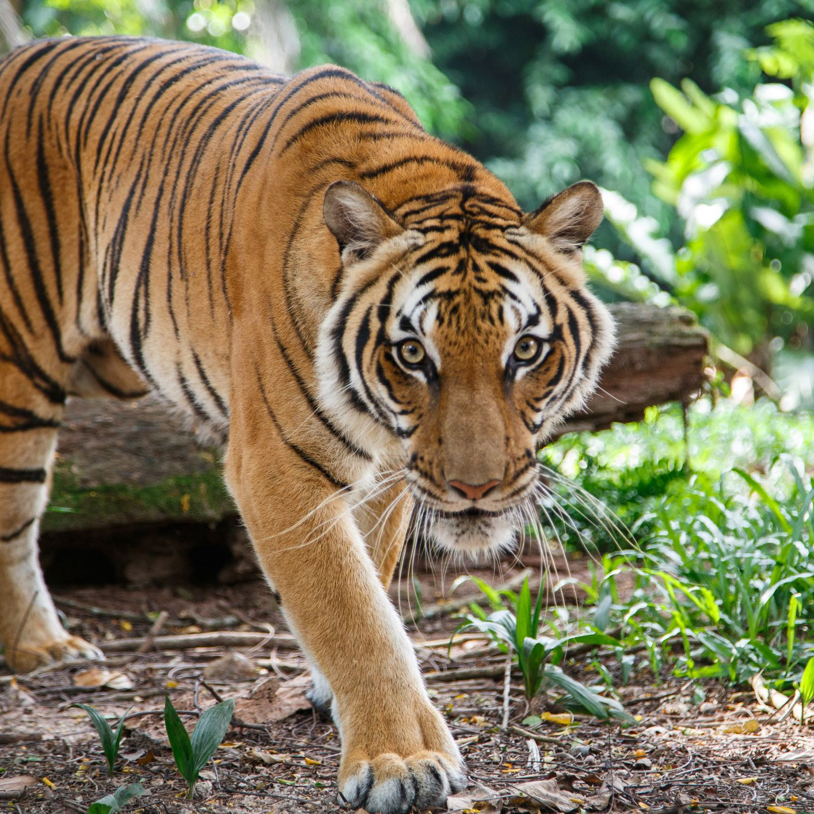
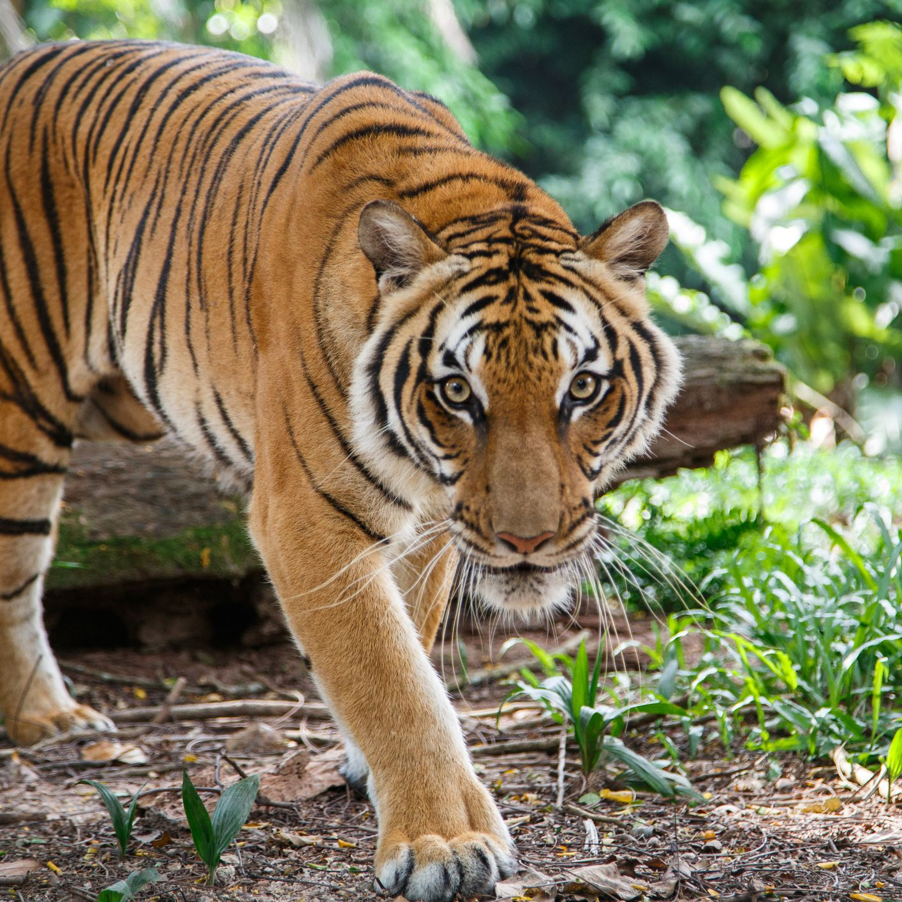